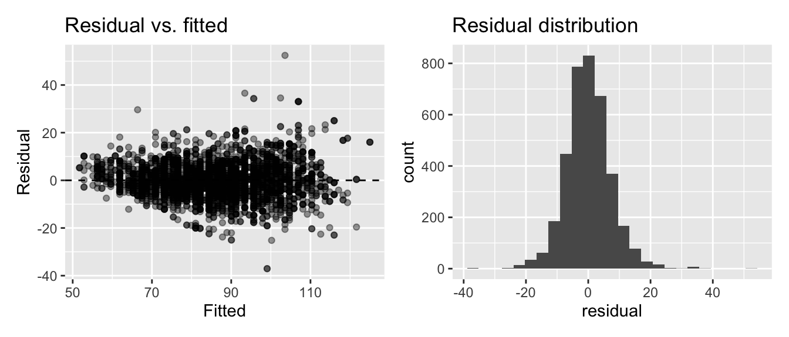
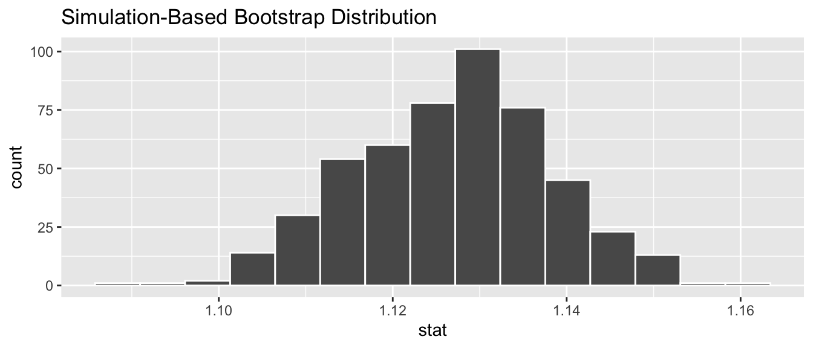
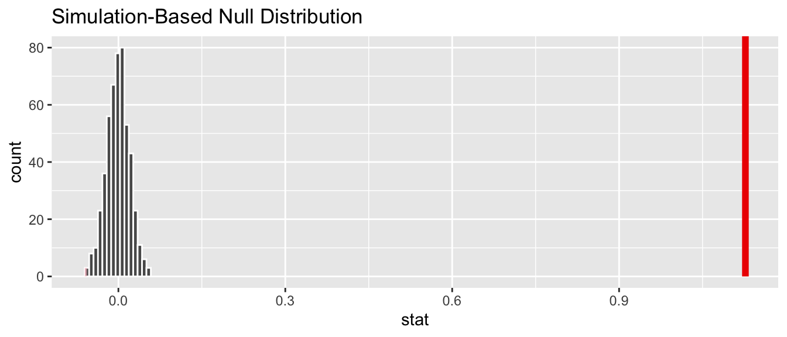
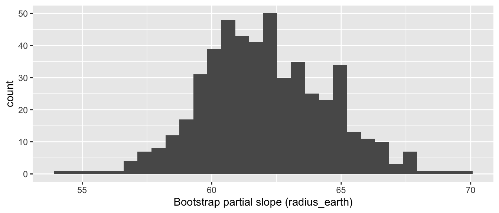
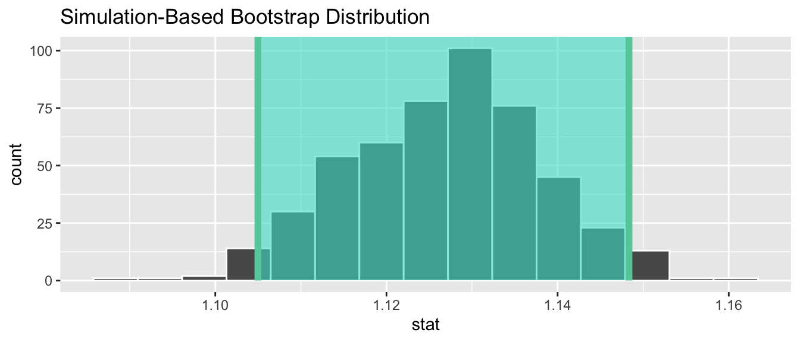
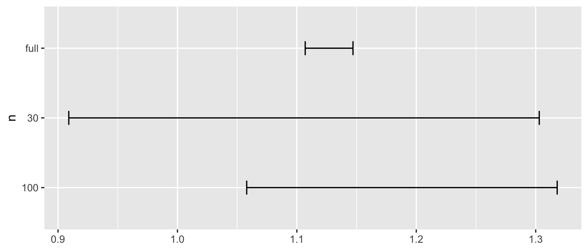
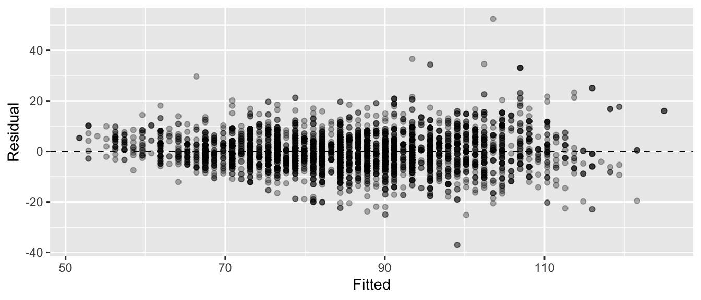
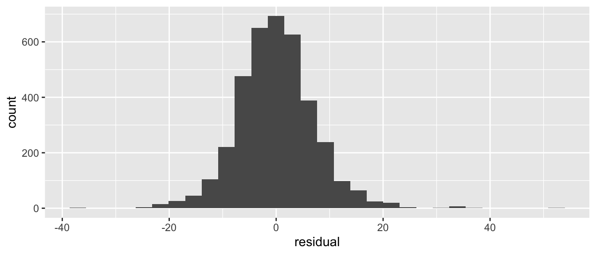
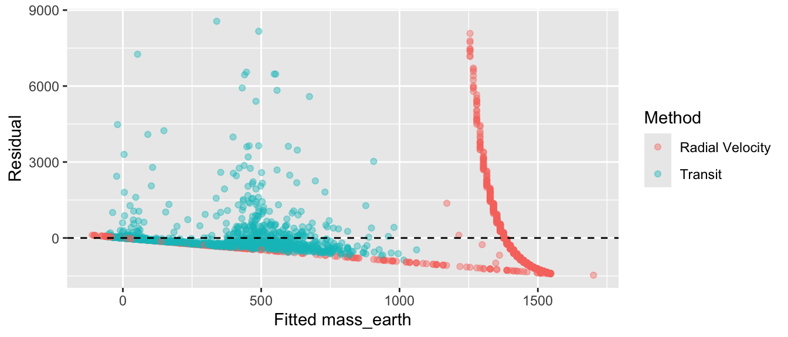
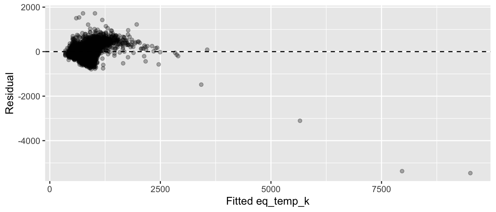

library(dplyr)
library(ggplot2)
library(infer)
library(moderndive)
library(broom)
library(olympicAthletes)
library(exoplanets)
bball <- olympic_athletes |>
filter(sport == "Basketball", !is.na(height), !is.na(weight))
m_b <- lm(weight ~ height, data = bball)
planets_lite <- planets |>
filter(!is.na(radius_earth), !is.na(mass_earth), !is.na(discovery_method)) |>
mutate(log_mass = log10(mass_earth), log_radius = log10(radius_earth))
top2 <- planets_lite |> count(discovery_method, sort = TRUE) |>
slice_head(n = 2) |> pull(discovery_method)
pl2 <- planets_lite |> filter(discovery_method %in% top2)Solutions for the end-of-chapter exercises in Chapter 10 — Inference for Regression. Datasets: olympic_athletes (olympicAthletes) and planets (exoplanets).
TipSection coverage at a glance
Exercises per section — count of prompts that touch each book section.
| Book section | # of exercises |
|---|---|
| 10.2 Theory-based inference for simple linear regression | 11 |
| 10.3 Simulation-based inference for simple linear regression | 7 |
| 10.5 Theory-based inference for multiple linear regression | 8 |
| 10.6 Simulation-based inference for multiple linear regression | 2 |
| Practical / interpretation (cross-section) | 4 |
| Critical thinking / synthesis | 10 |
Exercises by subsection — which prompts target each finer-grained subsection.
| Subsection | Exercises |
|---|---|
| 10.2.3 Confidence intervals for LS estimators | EX10.2 |
| 10.2.4 Hypothesis test for population slope | EX10.3, EX10.4, EX10.30 |
| 10.2.5 The regression table in R | EX10.1 |
| 10.2.6 Model fit and assumptions (LINE) | EX10.5, EX10.6, EX10.7, EX10.37, EX10.38, EX10.39 |
| 10.3 Simulation-based — bootstrap CI / permutation test | EX10.8, EX10.9, EX10.10, EX10.11, EX10.12 |
10.3.1 Confidence intervals using infer |
EX10.19 |
| 10.3.1 Theory- vs simulation-based CIs | EX10.20 |
| 10.5 + LINE diagnostics (cross-cut) | EX10.40, EX10.41, EX10.42 |
| 10.5 Theory-based for multiple regression | EX10.13, EX10.14, EX10.15, EX10.16 |
| 10.5.3 Confidence intervals for the partial slopes | EX10.21 |
| 10.6 Simulation-based for multiple regression | EX10.17, EX10.18 |
| Practical / interpretation (cross-section) | EX10.22, EX10.23, EX10.24, EX10.25 |
| Critical thinking / synthesis | EX10.26, EX10.27, EX10.28, EX10.29, EX10.31, EX10.32, EX10.33, EX10.34, EX10.35, EX10.36 |
A note on coverage. Sections 10.1 (the simple-LR model) and 10.4 (the multiple-LR model) appear with 0 exercise rows above: they are conceptual setups for the inference machinery that follows, and EX10.25 (“What’s the population in regression here?”) plus the practical/interpretation block effectively quizzes those setup ideas.
Difficulty: ★ warm-up · ★★ standard · ★★★ critical thinking.
Theory-based inference for simple regression
NoteEX10.1 — show question
EX10.1 (★★) Filter to basketball, fit lm(weight ~ height), print the regression table. Identify SE, t-statistic, and p-value of the slope.
Solution (reference: Section 10.2.5 “The regression table in R”).
get_regression_table(m_b)# A tibble: 2 × 7
term estimate std_error statistic p_value lower_ci upper_ci
<chr> <dbl> <dbl> <dbl> <dbl> <dbl> <dbl>
1 intercept -130. 1.97 -66.0 0 -134. -126.
2 height 1.13 0.01 110. 0 1.11 1.15
NoteEX10.2 — show question
EX10.2 (★★) Interpret the slope’s 95% CI in plain English.
Solution (reference: Section 10.2.3 “Confidence intervals for the least-squares estimators”).
We are 95% confident that, for each additional centimeter of height, the population mean Weight of Olympic basketball athletes increases by between [lower] and [upper] kilograms.
NoteEX10.3 — show question
EX10.3 (★★★) What’s the null hypothesis the slope’s p-value tests? What’s your conclusion?
Solution (reference: Section 10.2.4 “Hypothesis test for population slope”).
\(H_0\): population slope = 0 — i.e., Height has no linear relationship with Weight in the population. Tiny p-value ⇒ reject; basketball Height does predict Weight.
NoteEX10.4 — show question
EX10.4 (★★★) Verify: t-statistic = (estimate − 0) / SE.
Solution (reference: Section 10.2.4 “Hypothesis test for population slope”, t-statistic).
tab <- get_regression_table(m_b)
tab# A tibble: 2 × 7
term estimate std_error statistic p_value lower_ci upper_ci
<chr> <dbl> <dbl> <dbl> <dbl> <dbl> <dbl>
1 intercept -130. 1.97 -66.0 0 -134. -126.
2 height 1.13 0.01 110. 0 1.11 1.15tab$estimate[2] / tab$std_error[2][1] 112.7The computed ratio matches statistic in the table.
Model fit and assumptions (LINE)
NoteEX10.5 — show question
EX10.5 (★★) What four assumptions does lm() inference require? (acronym L.I.N.E.)
Solution (reference: Section 10.2.6 “Model fit and model assumptions”).
Linearity of the relationship, Independence of residuals, Normality of residuals, Equal variance (homoscedasticity).
NoteEX10.6 — show question
EX10.6 (★★★) Build a couple of ggplot-based diagnostic plots for m_b — a residual-vs-fitted plot and a histogram of the residuals. For each LINE assumption (Linearity, Independence, Normality, Equal variance), say which plot is most informative for that assumption and what you’d look for.
Solution (reference: Section 10.2.6 “Model fit and model assumptions”, residual diagnostics).
library(patchwork)
pts <- get_regression_points(m_b)
p_resid_fit <- ggplot(pts, aes(x = weight_hat, y = residual)) +
geom_point(alpha = 0.4) + geom_hline(yintercept = 0, linetype = 2) +
labs(x = "Fitted", y = "Residual", title = "Residual vs. fitted")
p_hist <- ggplot(pts, aes(x = residual)) +
geom_histogram(bins = 25) +
labs(title = "Residual distribution")
p_resid_fit + p_hist
Which plot probes which assumption:
- L (Linearity): residual-vs-fitted — look for a systematic curve in the cloud (trend → fit is missing structure).
- I (Independence): neither plot can detect this directly; it’s a design property of the data. We mention it but don’t diagnose it here.
- N (Normality): residual histogram — look for a roughly bell-shaped, symmetric distribution centered at 0.
- E (Equal variance): residual-vs-fitted — look for a trumpet shape (spread growing or shrinking with the fitted value).
For Olympic basketball the diagnostics are mostly clean.
NoteEX10.7 — show question
EX10.7 (★★★) “I trust the t-test more than the bootstrap because it has a closed form.” Push back.
Solution (reference: Section 10.3 “Simulation-based inference for simple linear regression”).
The t-test relies on assumptions (L.I.N.E.) that may not hold. The bootstrap is assumption-light — it just resamples the data — making it more reliable when residuals are skewed, when \(n\) is small, or when nonlinear structure violates the t-test’s premises.
Simulation-based inference for simple regression
NoteEX10.8 — show question
EX10.8 (★★★) Bootstrap distribution of the slope.
Solution (reference: Section 10.3.1 “Confidence intervals for the population slope using infer”).
set.seed(76)
slope_boot <- bball |>
specify(weight ~ height) |>
generate(reps = 500, type = "bootstrap") |>
calculate(stat = "slope")
visualize(slope_boot)
NoteEX10.9 — show question
EX10.9 (★★★) Bootstrap percentile 95% CI; compare to theory-based.
Solution (reference: Section 10.3.1 “Confidence intervals for the population slope using infer”, method comparison).
slope_boot |> get_confidence_interval(level = 0.95, type = "percentile")# A tibble: 1 × 2
lower_ci upper_ci
<dbl> <dbl>
1 1.10 1.15get_regression_table(m_b)# A tibble: 2 × 7
term estimate std_error statistic p_value lower_ci upper_ci
<chr> <dbl> <dbl> <dbl> <dbl> <dbl> <dbl>
1 intercept -130. 1.97 -66.0 0 -134. -126.
2 height 1.13 0.01 110. 0 1.11 1.15The bootstrap CI matches the theory-based CI very closely (large \(n\), well-behaved residuals).
NoteEX10.10 — show question
EX10.10 (★★★) Permutation test of \(H_0\): slope = 0.
Solution (reference: Section 10.3.2 “Hypothesis test for population slope using infer”).
set.seed(76)
null_slope <- bball |>
specify(weight ~ height) |>
hypothesize(null = "independence") |>
generate(reps = 500, type = "permute") |>
calculate(stat = "slope")
obs_slope <- bball |>
specify(weight ~ height) |>
calculate(stat = "slope")
get_p_value(null_slope, obs_stat = obs_slope, direction = "two-sided")Warning: Please be cautious in reporting a p-value of 0. This result is an approximation
based on the number of `reps` chosen in the `generate()` step.
ℹ See `get_p_value()` (`?infer::get_p_value()`) for more information.# A tibble: 1 × 1
p_value
<dbl>
1 0
NoteEX10.11 — show question
EX10.11 (★★★) Visualize the null + p-value shading.
Solution (reference: Section 10.3.2 “Hypothesis test for population slope using infer”).
visualize(null_slope) +
shade_p_value(obs_stat = obs_slope, direction = "two-sided")
NoteEX10.12 — show question
EX10.12 (★★★) Why do simulation-based and theory-based p-values agree here?
Solution (reference: Section 10.3 “Simulation-based inference for simple linear regression”).
With \(n\) in the thousands and reasonably normal residuals, both procedures converge on the same answer — the CLT applies to the sampling distribution of the slope estimator.
Theory-based inference for multiple regression
NoteEX10.13 — show question
EX10.13 (★★★) Build pl2, fit parallel-slopes, print table.
Solution (reference: Section 10.5 “Theory-based inference for multiple linear regression”).
m_par <- lm(mass_earth ~ radius_earth + discovery_method, data = pl2)
get_regression_table(m_par)# A tibble: 3 × 7
term estimate std_error statistic p_value lower_ci upper_ci
<chr> <dbl> <dbl> <dbl> <dbl> <dbl> <dbl>
1 intercept 389. 32.4 12.0 0 326. 453.
2 radius_earth 62.1 2.30 27.0 0 57.6 66.6
3 discovery_method-Trans… -535. 29.0 -18.4 0 -592. -478.
NoteEX10.14 — show question
EX10.14 (★★★) Interpret the 95% CI for radius_earth.
Solution (reference: Section 10.5.3 “Confidence intervals”, multiple-regression CIs).
Holding discovery method fixed, a one-Earth-radius increase in radius_earth is associated with a slope-sized increase in mass_earth, with the 95 % CI giving the plausible range for that slope. The CI is narrow when \(n\) is large; if it excludes zero, the direction of the association is well-supported by the data.
NoteEX10.15 — show question
EX10.15 (★★★) What does the p-value for the discovery-method coefficient test?
Solution (reference: Section 10.5.4 “Hypothesis test for a single coefficient”).
\(H_0\): the difference between the non-baseline method and the baseline method, holding radius fixed, is 0. Equivalently: parallel slopes share a common intercept.
NoteEX10.16 — show question
EX10.16 (★★★) Fit the interaction model; what does the interaction’s p-value tell you?
Solution (reference: Section 10.5.4 “Hypothesis test for a single coefficient”, interactions).
Tests whether the slope on radius_earth differs between the two methods. A small p-value means slopes really do differ — the interaction is needed.
m_int <- lm(mass_earth ~ radius_earth * discovery_method, data = pl2)
get_regression_table(m_int)# A tibble: 4 × 7
term estimate std_error statistic p_value lower_ci upper_ci
<chr> <dbl> <dbl> <dbl> <dbl> <dbl> <dbl>
1 intercept -188. 52.4 -3.59 0 -291. -85.4
2 radius_earth 121. 4.83 25.1 0 112. 131.
3 discovery_method-Trans… 114. 54.8 2.08 0.038 6.54 221.
4 radius_earth:discovery… -75.8 5.46 -13.9 0 -86.5 -65.1Simulation-based inference for multiple regression
NoteEX10.17 — show question
EX10.17 (★★★) Bootstrap CI for radius_earth coefficient; compare to theory.
Solution (reference: Section 10.6.1 “Confidence intervals for the partial slopes using infer”).
With multi-predictor models, easiest path is to extract coefficients per bootstrap replicate via tidy().
set.seed(76)
boot_radius <- replicate(500, {
s <- pl2 |> slice_sample(n = nrow(pl2), replace = TRUE)
coef(lm(mass_earth ~ radius_earth + discovery_method, data = s))["radius_earth"]
})
quantile(boot_radius, c(0.025, 0.975)) 2.5% 97.5%
57.57012 67.05254
NoteEX10.18 — show question
EX10.18 (★★★) Simulation-based inference for a partial slope. Take the parallel-slopes model m_par from EX10.13. Bootstrap the partial slope on radius_earth by resampling pl2 with replacement (≥ 500 reps), refitting on each resample, and pulling out the radius_earth coefficient. (a) Plot the bootstrap distribution. (b) Read off the 95% percentile CI and compare it to the theory-based CI from EX10.14. (c) Under what condition would you expect the simulation-based CI to disagree noticeably with the theory-based one?
Solution (reference: Section 10.6 “Simulation-based Inference for multiple linear regression”).
set.seed(76)
# Bootstrap the partial slope on radius_earth
n_reps <- 500
boot_slopes <- replicate(n_reps, {
idx <- sample(seq_len(nrow(pl2)), nrow(pl2), replace = TRUE)
m_b <- lm(mass_earth ~ radius_earth + discovery_method, data = pl2[idx, ])
coef(m_b)["radius_earth"]
})
ggplot(data.frame(slope = boot_slopes), aes(x = slope)) +
geom_histogram(bins = 30) +
labs(x = "Bootstrap partial slope (radius_earth)")
# (b) 95% percentile CI
boot_ci <- quantile(boot_slopes, c(0.025, 0.975))
boot_ci 2.5% 97.5%
57.57012 67.05254 # Compare with theory-based CI from EX10.14
m_par <- lm(mass_earth ~ radius_earth + discovery_method, data = pl2)
get_regression_table(m_par)# A tibble: 3 × 7
term estimate std_error statistic p_value lower_ci upper_ci
<chr> <dbl> <dbl> <dbl> <dbl> <dbl> <dbl>
1 intercept 389. 32.4 12.0 0 326. 453.
2 radius_earth 62.1 2.30 27.0 0 57.6 66.6
3 discovery_method-Trans… -535. 29.0 -18.4 0 -592. -478. (b) Comparison. The bootstrap percentile CI and the theory-based CI on radius_earth should overlap heavily — both centered on the OLS partial slope, both about the same width.
(c) When would they disagree? The theory-based CI assumes the four LINE conditions hold (Linearity, Independence, Normality of residuals, Equal variance). The bootstrap CI relaxes the Normality and Equal-variance assumptions — it directly resamples the joint \((x, y)\) distribution. So you’d expect them to disagree when:
- Residuals are heavy-tailed (e.g., a few extreme outliers) — the theory CI under-states uncertainty; the bootstrap captures it.
- Heteroscedasticity is strong — variance grows with the predictor; theory’s “homoscedastic σ̂” assumption gets the SE wrong.
- Sample is small — the t-distribution approximation degrades; the bootstrap, being non-parametric, fares better.
For well-behaved multi-thousand-row datasets (which this is), the two answers are usually within a few percent of each other — the bootstrap is insurance for the cases where theory’s assumptions wobble.
Visualizing slope uncertainty (bootstrap distribution)
NoteEX10.19 — show question
EX10.19 (★★★) Take the bootstrap slope distribution slope_boot from EX 10.8 and compute its 95 % percentile CI with get_confidence_interval(level = 0.95, type = "percentile"). Then re-plot visualize(slope_boot) and use shade_confidence_interval(endpoints = ...) (passing the lower/upper bounds you just computed) to mark the CI on the histogram.
Solution (reference: Section 10.3.1 “Confidence intervals using infer” — visualizing the CI).
set.seed(76)
slope_boot <- bball |>
specify(weight ~ height) |>
generate(reps = 500, type = "bootstrap") |>
calculate(stat = "slope")
ci <- slope_boot |>
get_confidence_interval(level = 0.95, type = "percentile")
ci# A tibble: 1 × 2
lower_ci upper_ci
<dbl> <dbl>
1 1.10 1.15visualize(slope_boot) +
shade_confidence_interval(endpoints = ci)
The shaded band marks the middle 95 % of bootstrap slopes — the range of slope values consistent with the observed data.
NoteEX10.20 — show question
EX10.20 (★★★) Compare two ways of estimating a 95 % CI for the slope of lm(weight ~ height, data = bball): (a) bootstrap percentile via infer::get_confidence_interval(), and (b) theory-based via get_regression_table(m_b) (the lower_ci / upper_ci columns). Do they agree closely? Briefly, when would you expect the two to disagree?
Solution (reference: Section 10.3.1 “Theory- vs simulation-based CIs”).
set.seed(76)
slope_boot <- bball |>
specify(weight ~ height) |>
generate(reps = 500, type = "bootstrap") |>
calculate(stat = "slope")
bootstrap_ci <- slope_boot |>
get_confidence_interval(level = 0.95, type = "percentile")
theory_ci <- get_regression_table(m_b) |>
filter(term == "height") |>
select(lower_ci, upper_ci)
list(bootstrap = bootstrap_ci, theory = theory_ci)$bootstrap
# A tibble: 1 × 2
lower_ci upper_ci
<dbl> <dbl>
1 1.10 1.15
$theory
# A tibble: 1 × 2
lower_ci upper_ci
<dbl> <dbl>
1 1.11 1.15With \(n\) in the thousands and roughly LINE-respecting residuals, the two CIs agree closely. They can drift apart when residuals are heavily skewed, when \(n\) is small, or when equal-variance is badly violated — in those cases the bootstrap’s assumption-light approach is the more honest choice.
NoteEX10.21 — show question
EX10.21 (★★★) For the parallel-slopes model m_par from EX 10.13, pull get_regression_table(m_par) and report the theory-based 95 % CI for the radius_earth slope (the lower_ci / upper_ci columns of the relevant row). Does the CI exclude zero? In one sentence, what does that tell you about whether radius_earth is a useful predictor of mass_earth after holding discovery_method constant?
Solution (reference: Section 10.5.3 “Confidence intervals for the partial slopes”).
get_regression_table(m_par) |>
filter(term == "radius_earth") |>
select(term, estimate, lower_ci, upper_ci)# A tibble: 1 × 4
term estimate lower_ci upper_ci
<chr> <dbl> <dbl> <dbl>
1 radius_earth 62.1 57.6 66.6If the 95 % CI for the radius_earth partial slope excludes zero, the data clearly support the conclusion that — holding discovery_method constant — mass increases with radius. If it includes zero, the data are consistent with no partial effect of radius on mass once detection method is accounted for.
Practical questions
NoteEX10.22 — show question
EX10.22 (★★★) Test \(H_0\): slope = 0 in lm(height ~ year, data = bball).
Solution (reference: Section 10.2.4 “Hypothesis test for population slope”).
get_regression_table(lm(height ~ year, data = bball))# A tibble: 2 × 7
term estimate std_error statistic p_value lower_ci upper_ci
<chr> <dbl> <dbl> <dbl> <dbl> <dbl> <dbl>
1 intercept 101. 19.6 5.16 0 62.7 140.
2 year 0.045 0.01 4.59 0 0.026 0.065A small p-value confirms heights have grown over time in basketball.
NoteEX10.23 — show question
EX10.23 (★★★) Reader concludes “Olympic basketball trains taller players.” Refute.
Solution (reference: Section 5.3.1 “Correlation is not necessarily causation”).
Same as Ch 5: the slope reflects selection (the Olympics has progressively recruited taller athletes due to NBA pipeline, rule changes), not biology. Inference doesn’t establish causation; only experiments and randomization do.
NoteEX10.24 — show question
EX10.24 (★★★) Repeat EX10.22 for gymnastics. Compare.
Solution (reference: Section 10.2.4 “Hypothesis test for population slope”).
Gymnastics likely has a negative slope (modern gymnasts are shorter than mid-century ones, especially female).
gym <- olympic_athletes |>
filter(sport == "Gymnastics", !is.na(height))
get_regression_table(lm(height ~ year, data = gym))# A tibble: 2 × 7
term estimate std_error statistic p_value lower_ci upper_ci
<chr> <dbl> <dbl> <dbl> <dbl> <dbl> <dbl>
1 intercept 280. 5.38 52.0 0 269. 291.
2 year -0.059 0.003 -21.7 0 -0.064 -0.054
NoteEX10.25 — show question
EX10.25 (★★★) What’s “the population” in regression here?
Solution (reference: Section 10.1 “The simple linear regression model”, scope of inference).
The “population” is implicitly all Olympic basketball athletes, past and future, who could be in this dataset under the same selection process. Inference applies to that population — not to the general human population. This is why CIs from Olympic data tell you about Olympic athletes, not basketball players in general.
Critical thinking and synthesis
NoteEX10.26 — show question
EX10.26 (★★★) With \(n \approx 1000\) tiny p-values are easy. Does that mean every effect is meaningful?
Solution (reference: Section 10.5.4 “Hypothesis test for a single coefficient”, practical vs statistical).
No. With \(n \approx 1000\), even effects measured in fractions of a kilogram or millimeters become statistically significant. Always check the estimate’s magnitude in domain units before celebrating.
NoteEX10.27 — show question
EX10.27 (★★★) Why does removing sport change the sex coefficient on Height?
Solution (reference: Section 10.5.2 “Model dependency of estimators”, omitted-variable bias).
Sport is correlated with both Sex (uneven gender ratios across sports) and Height (sport-specific selection on height). Omitting it makes the Sex coefficient absorb that confounding — coefficients are not invariant to which controls are included.
NoteEX10.28 — show question
EX10.28 (★★★) Demonstrate this for two specific sports.
Solution (reference: Section 10.5.2 “Model dependency of estimators”).
two_sports <- olympic_athletes |>
filter(sport %in% c("Athletics", "Swimming"),
!is.na(height))
get_regression_table(lm(height ~ sex, data = two_sports))# A tibble: 2 × 7
term estimate std_error statistic p_value lower_ci upper_ci
<chr> <dbl> <dbl> <dbl> <dbl> <dbl> <dbl>
1 intercept 170. 0.055 3091. 0 170. 170.
2 sex-M 11.0 0.07 157. 0 10.9 11.2get_regression_table(lm(height ~ sex + sport, data = two_sports))# A tibble: 3 × 7
term estimate std_error statistic p_value lower_ci upper_ci
<chr> <dbl> <dbl> <dbl> <dbl> <dbl> <dbl>
1 intercept 169. 0.062 2737. 0 169. 169.
2 sex-M 11.4 0.069 166. 0 11.3 11.6
3 sport-Swimming 3.69 0.069 53.3 0 3.55 3.83The SexM coefficient typically changes once sport is added — the per-sport male-female gap differs from the pooled gap.
NoteEX10.29 — show question
EX10.29 (★★★) CI widths at \(n \in \{30, 100, \text{full}\}\).
Solution (reference: Section 10.2.3 “Confidence intervals for the least-squares estimators”).
Width shrinks as \(\sqrt{n}\) grows.
set.seed(76)
ci_at_n <- function(nn) {
s <- if (nn == "full") bball else slice_sample(bball, n = as.integer(nn))
tab <- get_regression_table(lm(weight ~ height, data = s))
tab |> filter(term == "height") |>
transmute(lower_ci, upper_ci, n = nn)
}
out <- bind_rows(ci_at_n("30"), ci_at_n("100"), ci_at_n("full"))
out# A tibble: 3 × 3
lower_ci upper_ci n
<dbl> <dbl> <chr>
1 0.909 1.30 30
2 1.06 1.32 100
3 1.11 1.15 full ggplot(out, aes(y = n, xmin = lower_ci, xmax = upper_ci)) +
geom_errorbarh(height = 0.2)Warning: `geom_errorbarh()` was deprecated in ggplot2 4.0.0.
ℹ Please use the `orientation` argument of `geom_errorbar()` instead.`height` was translated to `width`.
NoteEX10.30 — show question
EX10.30 (★★★) For m_b (the basketball weight-vs-height model), extract the slope’s t-statistic and p-value from get_regression_table(m_b) (the statistic and p_value columns). In one sentence each, what is the t-statistic measuring, and what null hypothesis is the p-value testing?
Solution (reference: Section 10.2.4 “Hypothesis test for population slope”).
get_regression_table(m_b) |>
filter(term == "height") |>
select(term, estimate, std_error, statistic, p_value)# A tibble: 1 × 5
term estimate std_error statistic p_value
<chr> <dbl> <dbl> <dbl> <dbl>
1 height 1.13 0.01 110. 0The t-statistic is estimate / std_error — how many standard errors away from zero the observed slope sits. The p-value is the probability of seeing a slope this far from zero (in either direction) if the true population slope were zero — i.e., it tests \(H_0: \beta_1 = 0\). A tiny p-value means the observed slope is implausibly far from zero under \(H_0\), so we reject the null.
NoteEX10.31 — show question
EX10.31 (★★★) Section 10.5.4 lets you read a separate p-value for each coefficient in a multi-predictor model. For m_par (EX 10.13), suppose its radius_earth coefficient has a tiny p-value, while the discovery_method offset has a large p-value. In plain English, what does the combination of those two p-values tell you about each predictor’s evidence-supported role in the model?
Solution (reference: Section 10.5.4 “Hypothesis test for a single coefficient”).
A tiny p-value on radius_earth means the partial relationship between radius and mass (holding detection method fixed) is well-supported by the data — radius adds information beyond what method alone tells you. A large p-value on the discovery_method offset means the data don’t clearly support a vertical-shift difference between methods once radius is already accounted for. So the combined message is: radius does most of the predictive work; detection method, conditional on radius, doesn’t move mass much.
NoteEX10.32 — show question
EX10.32 (★★★) On pl2, fit two simple-LR models: (a) lm(mass_earth ~ radius_earth) (no discovery_method), and (b) lm(mass_earth ~ radius_earth + discovery_method) (the parallel-slopes spec). Read the radius_earth slope from each. Did the slope move much when you added discovery_method as a control? If so, what does that tell you about how discovery_method and radius_earth are related as predictors?
Solution (reference: Chapter 10 — synthesis, confounding via omitted variables).
m_simple <- lm(mass_earth ~ radius_earth, data = pl2)
m_with <- lm(mass_earth ~ radius_earth + discovery_method, data = pl2)
list(simple = get_regression_table(m_simple) |>
filter(term == "radius_earth") |> pull(estimate),
with_dm = get_regression_table(m_with) |>
filter(term == "radius_earth") |> pull(estimate))$simple
[1] 80.429
$with_dm
[1] 62.084If the radius slope moves a lot when discovery_method is added, that’s a signal that detection method is correlated with radius (e.g., one method preferentially finds large planets while the other finds small ones). The simple-LR slope mixed in that confounded variation; the multi-predictor slope isolates the partial effect of radius after method is held fixed. That’s the same omitted-variable lesson EX 10.27 made on bball.
The slopes can differ; if they have opposite signs and the pooled has the wrong direction, that would be Simpson’s paradox.
NoteEX10.33 — show question
EX10.33 (★★★) R² = 0.95 but diagnostics show curvature — trust the inference?
Solution (reference: Section 10.2.6 “Model fit and model assumptions”).
No. The high R² doesn’t validate the model form. Curvature in residuals violates linearity, biasing inference (CIs/SEs misstate uncertainty) and producing predictions that systematically err in different parts of the X range.
NoteEX10.34 — show question
EX10.34 (★★★) CI for slope is (0.001, 0.005). Above 0 but tiny — takeaway?
Solution (reference: Section 10.2.3 “Confidence intervals for the least-squares estimators”, practical significance).
The slope is statistically different from 0 (CI excludes 0), but practically tiny — for any X-range you care about, the predicted Y barely moves. Don’t write a press release.
NoteEX10.35 — show question
EX10.35 (★★★) Open exploration: pick a numerical pair, fit and run inference.
Solution (reference: Chapter 10 — synthesis).
Answers vary. Example: weight ~ height for swimming — strong positive slope, narrow 95% CI, p ≈ 0.
swim <- olympic_athletes |>
filter(sport == "Swimming", !is.na(height), !is.na(weight))
get_regression_table(lm(weight ~ height, data = swim))# A tibble: 2 × 7
term estimate std_error statistic p_value lower_ci upper_ci
<chr> <dbl> <dbl> <dbl> <dbl> <dbl> <dbl>
1 intercept -106. 0.733 -144. 0 -107. -104.
2 height 0.987 0.004 241. 0 0.979 0.995
NoteEX10.36 — show question
EX10.36 (★★★) Build a multiple regression on planets predicting eq_temp_k from ≥2 predictors and write a 2–3 sentence summary of robustly supported findings.
Solution (reference: Chapter 10 — synthesis).
Answers vary. Robustly supported: (i) insolation is a strong, statistically significant predictor of equilibrium temperature; (ii) host star temperature has a smaller but significant additional effect; (iii) selection-bias caveats apply — these conclusions describe the catalog, not all exoplanets.
planets_temp <- planets |>
filter(!is.na(eq_temp_k), !is.na(star_temp_k), !is.na(insolation_earth)) |>
mutate(insolation_earth = insolation_earth)
get_regression_table(lm(eq_temp_k ~ insolation_earth + star_temp_k, data = planets_temp))# A tibble: 3 × 7
term estimate std_error statistic p_value lower_ci upper_ci
<chr> <dbl> <dbl> <dbl> <dbl> <dbl> <dbl>
1 intercept -91.2 34.8 -2.62 0.009 -159. -23.0
2 insolation_earth 0.175 0.004 42.4 0 0.167 0.183
3 star_temp_k 0.173 0.006 26.7 0 0.16 0.185Residual diagnostics in practice (deferred from Chs 5–6)
NoteEX10.37 — show question
EX10.37 (★★★) Carried over from Chapter 5 — the model itself is simple-LR material, but the residual-vs-fitted diagnostic* requires the LINE assumptions from § 10.2.6.*
Plot residuals against fitted values for m_b (the simple-LR lm(weight ~ height, data = bball) fit at the top of this chapter). Do you see any obvious pattern (curvature → linearity violation, fan-shape → equal-variance violation) that would suggest mis-specification?
Solution (reference: Section 10.2.6 “Model fit and assumptions (LINE)”, residual-vs-fitted plot).
Look for trumpet shapes (Equal-variance violation) or systematic curvature (Linearity violation). The basketball data is mostly clean; modest fan-out is normal at the high-weight tail.
get_regression_points(m_b) |>
ggplot(aes(x = weight_hat, y = residual)) +
geom_point(alpha = 0.3) +
geom_hline(yintercept = 0, linetype = 2) +
labs(x = "Fitted", y = "Residual")
NoteEX10.38 — show question
EX10.38 (★★★) Carried over from Chapter 5 — the residuals come from a Ch 5 simple-LR model, but interpreting their distribution* belongs with LINE in § 10.2.6.*
Build a histogram of residuals from m_b. Are they roughly symmetric and centered at zero? Which LINE assumption does this most directly probe?
Solution (reference: Section 10.2.6 “Model fit and assumptions (LINE)”, normality of residuals).
Roughly bell-shaped and centered at 0 — the Normality assumption of LINE is reasonable here.
get_regression_points(m_b) |>
ggplot(aes(x = residual)) +
geom_histogram(bins = 30)
NoteEX10.39 — show question
EX10.39 (★★★) Carried over from Chapter 5 — same Ch 5 model, but checking the Equal-variance assumption belongs with the LINE diagnostics from § 10.2.6.
Plot residuals from m_b vs height (the predictor). Does the residual spread grow with height (a violation of the Equal-variance condition in LINE)? What does that imply about trusting the theory-based slope CI?
Solution (reference: Section 10.2.6 “Model fit and assumptions (LINE)”, equal-variance check).
Some fan-out at higher heights is visible — not extreme, but enough to note. That’s a mild Equal-variance violation: the theory-based slope CI assumes constant residual variance, so a noticeable fan should make you reach for the simulation-based (bootstrap) CI from § 10.3 instead, which doesn’t depend on equal variance.
get_regression_points(m_b) |>
ggplot(aes(x = height, y = residual)) +
geom_point(alpha = 0.3) +
geom_hline(yintercept = 0, linetype = 2)
NoteEX10.40 — show question
EX10.40 (★★★) Carried over from Chapter 6 — fitting an interaction model is Ch 6 material, but interpreting per-group residual patterns belongs with the LINE diagnostics in § 10.2.6.
From m_int, pull residuals with get_regression_points(). (a) Plot residuals vs fitted values colored by discovery_method — does the residual cloud look the same for both methods? (b) For each discovery_method, compute the mean residual; both should be ≈ 0 by construction. Verify, and explain in one sentence why the means are mathematically forced to be ≈ 0.
Solution (reference: Section 10.2.6 “Model fit and assumptions (LINE)” applied to the interaction model from Ch 6).
pts_int <- get_regression_points(m_int)
# (a) residuals vs fitted, colored by method
pts_int |>
ggplot(aes(x = mass_earth_hat, y = residual,
color = discovery_method)) +
geom_point(alpha = 0.4) +
geom_hline(yintercept = 0, linetype = 2) +
labs(x = "Fitted mass_earth", y = "Residual", color = "Method")
# (b) per-method mean residual — should be ≈ 0
pts_int |>
group_by(discovery_method) |>
summarize(mean_resid = mean(residual), .groups = "drop")# A tibble: 2 × 2
discovery_method mean_resid
<fct> <dbl>
1 Radial Velocity 0.00000612
2 Transit 0.00000607Both per-method means are essentially zero. Why: the interaction model gives each discovery_method its own intercept and its own slope. The OLS fit chooses those parameters to minimize squared residuals within each group, which is mathematically equivalent to forcing the group-specific residual mean to zero (just as a model with only an intercept produces residuals that sum to zero).
NoteEX10.41 — show question
EX10.41 (★★★) Carried over from Chapter 6 — m_two was fit in Ch 6, but a residual-vs-fitted plot to probe LINE for a multi-predictor model belongs here.
Plot residuals vs fitted values for m_two. Comment on any structure you see (curvature, fan-shape, outlier clusters). Which LINE assumption is each pattern probing?
Solution (reference: Section 10.2.6 “Model fit and assumptions (LINE)” extended to multiple regression).
planets_temp <- planets |>
filter(!is.na(eq_temp_k), !is.na(star_temp_k), !is.na(insolation_earth))
m_two <- lm(eq_temp_k ~ insolation_earth + star_temp_k,
data = planets_temp)
get_regression_points(m_two) |>
ggplot(aes(x = eq_temp_k_hat, y = residual)) +
geom_point(alpha = 0.3) +
geom_hline(yintercept = 0, linetype = 2) +
labs(x = "Fitted eq_temp_k", y = "Residual")
Some unequal-variance behavior at the high-temperature end is expected — hot exoplanets near their stars are over-represented and under-modeled by a two-predictor linear fit. That’s an Equal-variance (LINE “E”) flag. A trumpet shape (or systematic curvature) here is a signal to either add more predictors or fall back on the bootstrap (§ 10.3) for the slopes, which doesn’t require equal variance.
NoteEX10.42 — show question
EX10.42 (★★★) Carried over from Chapter 6 — inspecting the typical magnitude* of residuals is a natural follow-on to the LINE diagnostics in § 10.2.6.*
For m_two (reuse the setup from EX 10.41), use get_regression_points(m_two) to compute the standard deviation of the residual column with sd(). Translate this number into Kelvin and explain in one sentence what it tells a non-statistician about how far off a typical per-planet prediction is.
Solution (reference: Section 10.5 + LINE diagnostics — typical residual magnitude).
planets_temp <- planets |>
filter(!is.na(eq_temp_k), !is.na(star_temp_k), !is.na(insolation_earth))
m_two <- lm(eq_temp_k ~ insolation_earth + star_temp_k,
data = planets_temp)
get_regression_points(m_two) |>
summarize(typical_residual = sd(residual))# A tibble: 1 × 1
typical_residual
<dbl>
1 337.A typical per-planet prediction is off by roughly ±typical_residual Kelvin (the standard deviation of the residuals). In plain English: the model is good at describing trends across the catalog, but you shouldn’t expect any individual planet’s predicted temperature to be within a few tens of Kelvin of the truth.